Different imput styles fo logistic analysis
keywords jamovi, logistic models, generalized linear models, weighted data, success/fails
3.4.0
Data suitable for running a logistic model may come in different shapes. Statistical software may allow to analyze the data the way they are or a reshape of the data might be necessary. In GAMLj, logistic models may be estimated with different types of data shapes, so here we show how to. We focus on the Logistic Model, but exactely the same procedures can be used for the Probit model.
There are five ways one can setup a logistic model in GAMLj. To demonstrate how they are, we are going to use a different versions of datasets of an hypothetical study in which there is an independent variable \(X\) and one dichotomous dependent variable indicating success with \(Y=1\) and fail with \(Y=0\). All datasets contain the same data, only formatted in different ways.
- Long format data: Each row is a case, and every case has either 1 or 0 in the dependent variable. In this page, we are going to use the file wlogistic_verylong.omv which has 5500 rows for 5500 cases.
The head of the file looks like this:
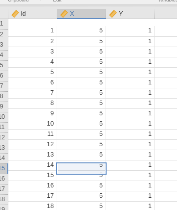
We have two variables, \(X\) and \(Y\), that contain the individual values for the independent and dependent variable, respectively. There are 5500 cases in the 2693 of which show \(Y=1\), implying that 49% of the sample has a \(Y=1\).
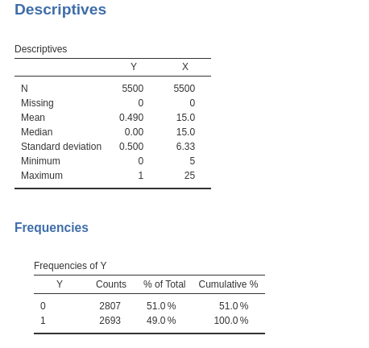
- Weighted long format: Each row represents a combination of values for the dependent and independent variables, and each combination is associated with the count of times it appears in the sample. The dependent variable is either 1 or 0. In this example, we will use the file wlogistic_long.omv, which has 22 rows, with \(X\) and \(Y\) as variables, plus a \(Counts\) column that indicates the weight of the row—essentially the number of cases in which this combination occurs.
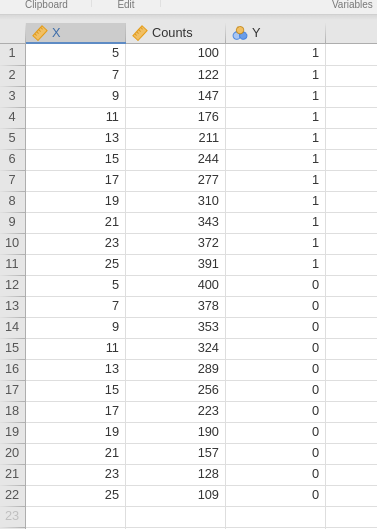
For instance, the first row shows that \(Y=1\) and \(X=5\) occurred 100 times in the sample, while the combination \(Y=0\) and \(X=5\) (row 2) occurred 400 times. It is worth noting that the sum of the weights for each level of \(X\) always equals 500. This constant sum of weights is not a requirement of logistic regression; it just happens to be the case in this file.
- Success/failure: In this format, each row represents a distinct value of the independent variable. One column indicates the number of successes (\(Y=1\)) and another column indicates the number of failures (\(Y=0\)). We will use the file wlogistic_wide.omv, which contains 11 rows, with \(X\), \(Counts.1\) indicating the number of successes, and \(Counts.0\) indicating the number of failures.
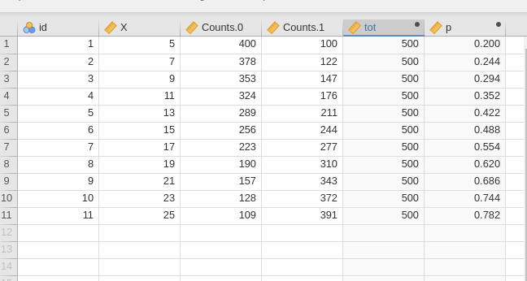
For example, the first row shows that \(Y=1\) and \(X=5\) occurred 100 times in the sample, while \(Y=0\) and \(X=5\) (row 2) occurred 400 times. The \(N\) variable is not relevant here, but we will use it later. The same pattern applies to the other rows in the dataset.
- Probability over totals: This format is equivalent to success/failure, but the dependent variable is expressed as the probability of success (the \(p\) variable in the file above), and the weights represent the total number of cases for each row. In our example, this is \(tot\), which equals 500 for each row. In other words, in this format, one would say that, for instance, for \(X=5\), there is a probability of .200 for success, and this holds for 500 cases.
Long format data
For long format data, we simply estimate the model setting the dependent and the independent variable.
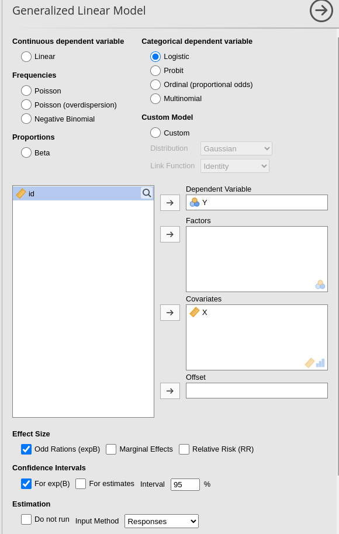
Notice at the bottom of the UI the Input
Method option. By default is Responses, indating
that the dependent variable represent each case response to the
dichotomous variable.
Let’s take a note of some results, so we can compare them with the results of other input methods. Here we have
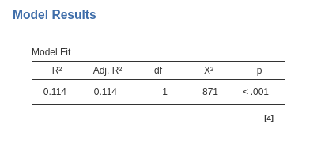 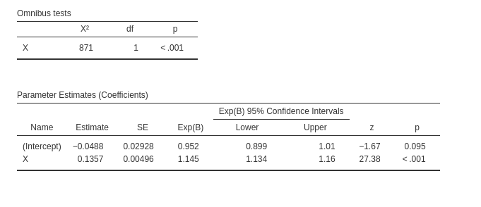
an \(R^2=.114\), \(\chi^=871\), and \(exp(B)=1.145\).
finally, we can appreciate that the sample size is indeed 5500 cases
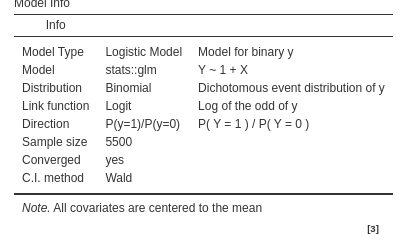
Weighted Long format
File wlogistic_long.omv
The weighted long format features a dichotomous dependent variable, with weights used to assign the frequency of responses. To run the model, we need to utilize the jamovi weighting tool. First, we set up the dataset to be weighted by the variable \(Counts\).
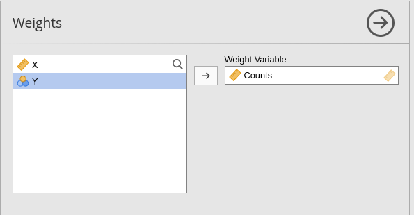
Next, we run the model exactly as we did before:
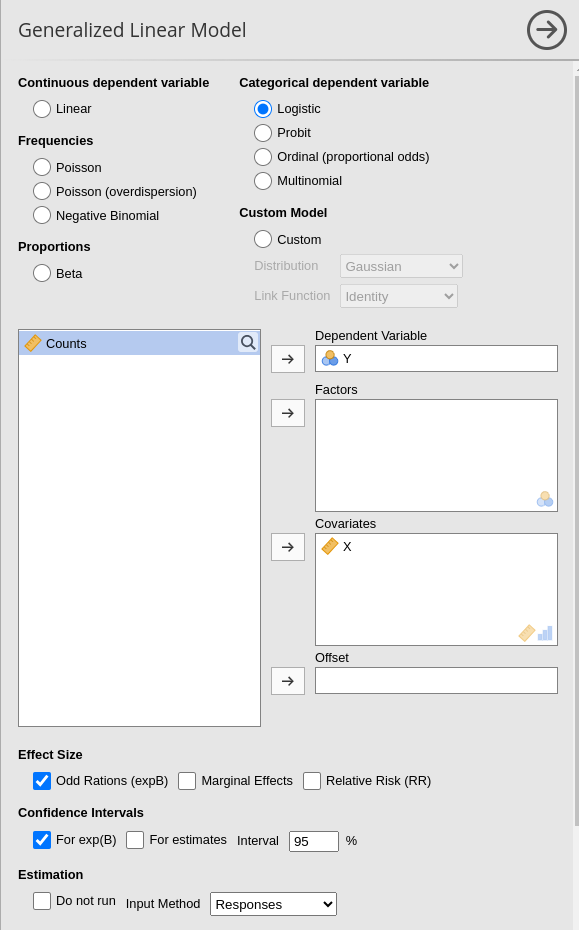
And we obtain the same results:
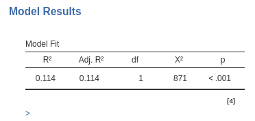
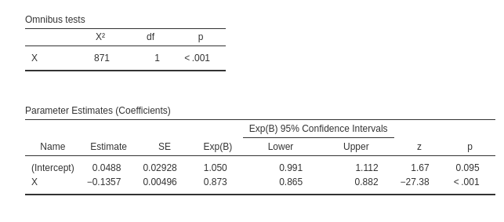
Note that the sample size is now 22 (the number of rows), but the software recognizes that the analysis is equivalent to one run on 5,500 cases.
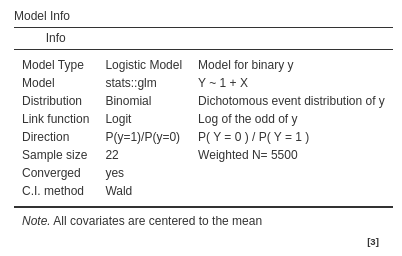
success/ failure format
File wlogistic_wide.omv
The success/failure format works with two key
columns: one for the number of successes (\(Y=1\)) and the other for the number of
failures (\(Y=0\)), represented as
counts. To run the model, you don’t need to apply weights; instead,
select the Success/Failure option in Input Method. This will provide two input fields
for the dependent variable, where you assign the columns that represent
the counts of successes and failures.
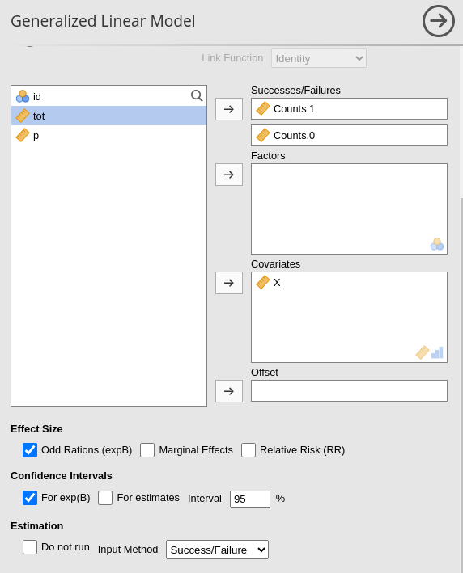
Once that’s done, you’ll get the same reliable results:
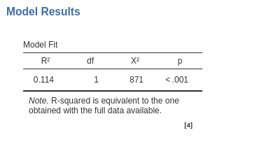
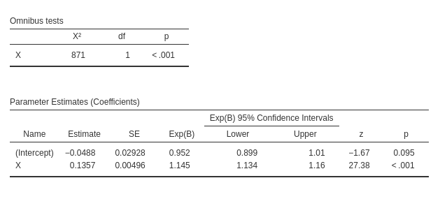
What’s worth noting is the footnote in the Model Fit
table, which reminds you that the \(R^2\) is calculated as if the full long
format were available. This is a crucial distinction because, in other
software, calculating the \(R^2\) using
this format can sometimes lead to discrepancies—often producing an
incorrect value.
Probability over totals
Alternative, one can use the probability of \(Y=1\) along with the total number of cases
represented in each row. File wlogistic_wide.omv. As compare with the example
above, it entails simply to select P(success)/Totals in the
Input Method option.
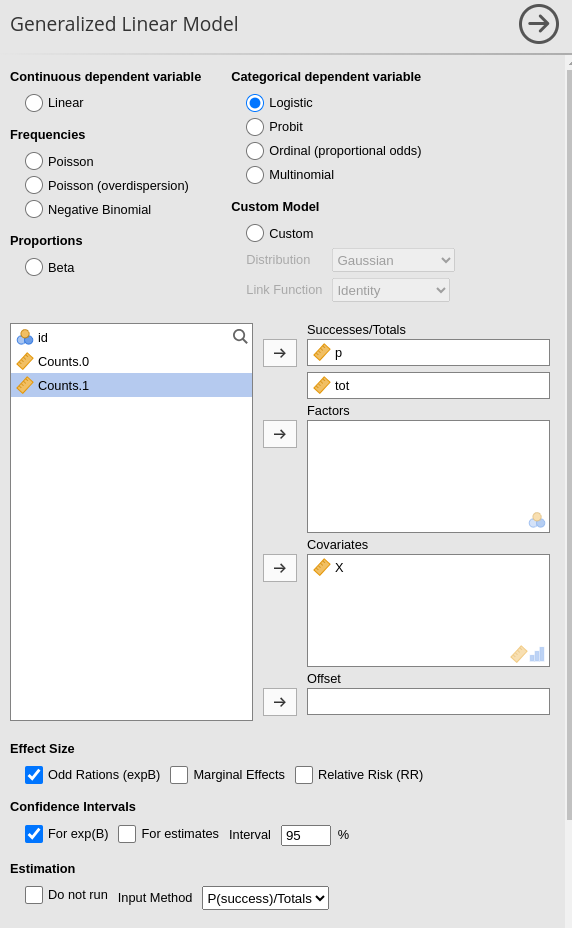
Results are as expected.
Comments?
Got comments, issues or spotted a bug? Please open an issue on GAMLj at github or send me an email